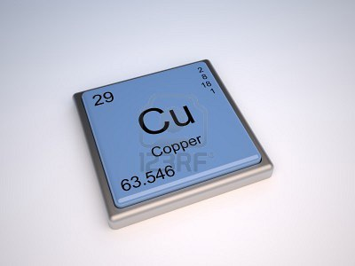

COBRE:

El cobre (del latín cuprum, y éste del griego kýpros),[6] cuyo símbolo es Cu, es el elemento químico de número atómico 29. Se trata de un metal de transición de color rojizo y brillo metálico que, junto con la plata y el oro, forma parte de la llamada familia del cobre, se caracteriza por ser uno de los mejores conductores de electricidad (el segundo después de la plata). Gracias a su alta conductividad eléctrica, ductilidad y maleabilidad, se ha convertido en el material más utilizado para fabricar cables eléctricos y otros componentes eléctricos y electrónicos.
 Ir a página principal
Ir a página principal